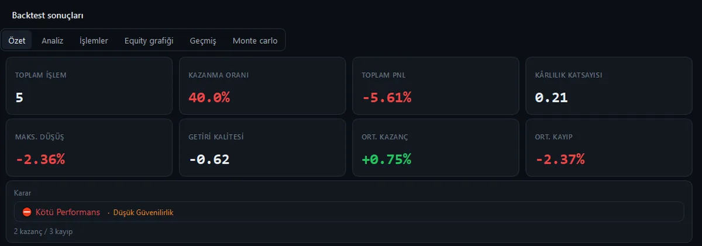

Binance ve OKX için Windows trading terminali
Kendi kuralların.
Otomatik tarama, kontrollü risk.
Sentralyx, Binance ve OKX için bir kripto botu ve otomatik trade terminalidir. Kurduğun stratejiye göre piyasayı tur tur tarar, kuralların sağlandığında sinyal üretir ve pozisyonlarını SL/TP ile yönetir. Sinyal satmaz; sinyalleri senin stratejin üretir.

Trader'ın üç büyük sorunu
Piyasa 7/24 açık; sen değilsin. Sentralyx, kurallarını senin yerine uygular.
Tüm piyasayı her an tarayamazsın
Yüzlerce coinde fırsat aramak saatler sürer ve çoğu zaman geç kalınır.
SL ve TP'yi sürekli takip edemezsin
Açık pozisyonların stop ve hedef seviyelerini elle yönetmek yorucu ve hataya açık.
Sürekli ekran başında olamazsın
Duygusal kararlar ve kaçırılan sinyaller çoğu zaman en büyük maliyettir.
Üç adımda kendi trading sistemin
Kod bilmen gerekmez. Stratejini kur, geçmişte ve sanal modda dene, sonra otomatik çalıştır.
Stratejini indikatör seçerek oluştur
Strateji sihirbazında strateji tipini, piyasa rejimini ve indikatörleri seçersin. Her indikatörün AL/SAT kuralını sen belirlersin.
- Puanlama, Çoğunluk, Güçlü Çoğunluk ve Tam Uyum
- ADX, ATR ve piyasa rejimi filtreleri
- 30 indikatör için düzenlenebilir kurallar

Gerçek paraya geçmeden önce dene
Backtest stratejini komisyon ve kayma dahil geçmiş veride çalıştırır. Sonra sanal modda bugünkü piyasada, gerçek para kullanmadan denersin.
- Komisyon ve kayma (slippage) simülasyonu
- Monte Carlo, gün/saat/yön analizi, equity grafiği
- Sanal mod: aynı akış, gerçek emir yok

Sinyalden pozisyona, kurallarla
Sinyal geldiğinde pozisyon ayarlarına göre açılır. Açık pozisyonları tek ekrandan yönetirsin: kapat, yarısını kapat, SL'yi taşı, TP ayarla.
- Sadece spot, hibrit ya da tam vadeli mod
- Günlük zarar limiti ve maksimum pozisyon sayısı
- Yalnızca kendi açtığı pozisyonları yönetir

Tek terminalde tüm akış
Tarama, strateji, test, pozisyon yönetimi ve raporlama aynı uygulamada.
Tarayıcı ve sinyal tablosu
Her coin için indikatör sonuçları, BUY/SELL/NONE sinyali ve sinyal oluşmadıysa sebebi.
Detaylı bilgiÇoklu zaman dilimi
Üst zaman dilimi (MTF) ve alt zaman dilimi (LTF) onayı ile daha seçici sinyaller.
Detaylı bilgiGerçekçi backtest
Komisyon ve kayma dahil geçmiş veride test, Monte Carlo ve detaylı analiz.
Detaylı bilgiKâr koruma
İzleyen stop (trailing), başa baş (break-even), yarım kapama ve SL'yi girişe taşıma.
Detaylı bilgiSanal mod
Gerçek para kullanmadan aynı akışla işlem simülasyonu. Sanal ve gerçek mod arasında serbest geçiş.
Detaylı bilgiRaporlar ve dışa aktarma
Günlük özet, başarı oranı, toplam/ortalama PnL, en iyi ve en kötü işlem. CSV, PDF ve Excel.
Detaylı bilgiAnahtarların sende, kontrol sende
Sentralyx bilgisayarında çalışan bir masaüstü uygulamasıdır. Riski azaltmak için tasarlanmış önlemler:
Şifreli API anahtarları
Anahtarlar cihazının donanım kimliğinden türetilen bir anahtarla şifrelenip yerelde saklanır. Başka cihaza kopyalanan ayar dosyası çözülemez.
Para çekme izni gerekmez
Uygulama, API anahtarında para çekme izninin kapalı olmasını önerir. Yalnızca okuma ve işlem izni yeterlidir.
SL/TP borsada da durur
Stop ve kâr al emirleri borsaya da gönderilir; uygulama kapalıyken de borsada kalır.
Yalnızca kendi emirleri
"SX" önekli emirlerle çalışır; aynı hesaptaki başka bir bota ya da sana ait pozisyonlara dokunmaz.

Sentralyx ne değildir?
Ücretsiz başla, hazır olunca yükselt
Lisans talebi uygulama içinden yapılır ve lisans cihaza bağlıdır.
Free
- Tarama ve analiz
- Backtest (son 30 gün veri)
- Pozisyon açma yok
- Gerçek mod kilitli
Full
- Sanal ve gerçek modda otomatik pozisyon
- Sınırsız backtest veri aralığı
- Pozisyon yönetimi ve kâr koruma
- Raporlar ve dışa aktarma
Trial
- Tüm Full özellikleri
- Sanal ve gerçek modda pozisyon
- Sınırsız backtest
- Kredi kartı gerekmez
Ödemeler USDT (TRC20) ile yapılır. Tüm paketlerde lisans tek cihaz içindir.
Sık sorulan sorular
Sentralyx bir sinyal grubu mu?
Hayır. Sentralyx sinyal satmaz ya da dağıtmaz. Sinyalleri, senin kurduğun strateji ve kurallar üretir.
Kod bilmem gerekiyor mu?
Hayır. Stratejini strateji sihirbazında indikatör seçerek kurarsın; AL/SAT kurallarını arayüzden düzenlersin.
Ücretsiz sürümde otomatik işlem açılıyor mu?
Hayır. Free sürümde tarama ve analiz yapılır, pozisyon açılmaz. Tüm özellikleri 7 günlük Trial ile ücretsiz deneyebilirsin.
API anahtarlarım güvende mi?
Anahtarlar cihazının donanım kimliğinden türetilen bir anahtarla şifrelenip yerelde saklanır. API anahtarında para çekme iznini kapalı tutman önerilir.
Stratejini bugün sanal modda dene
Uygulamayı indir, stratejini kur ve gerçek para kullanmadan nasıl çalıştığını gör.